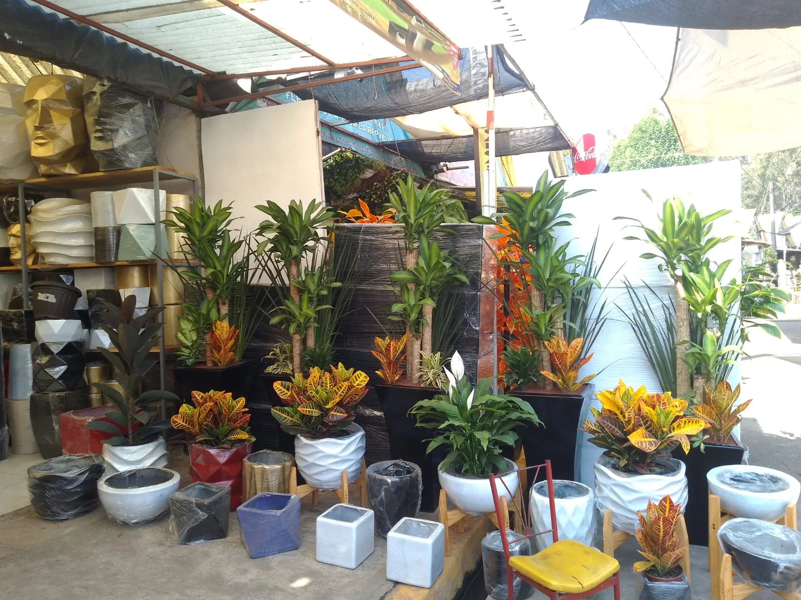
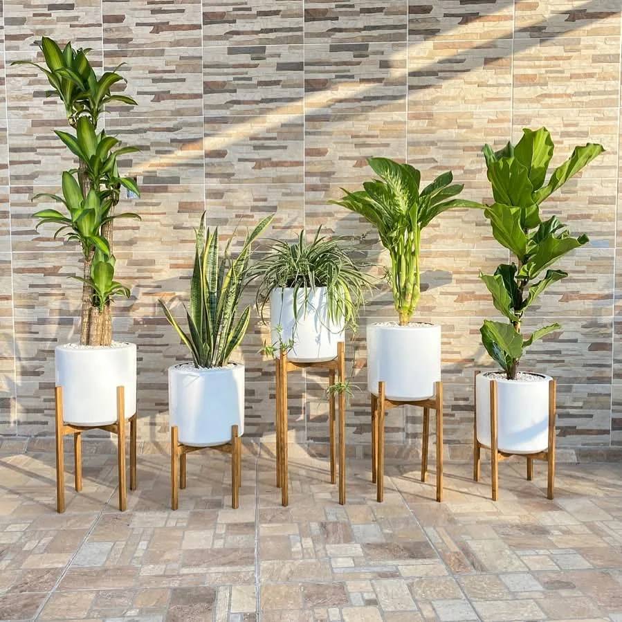
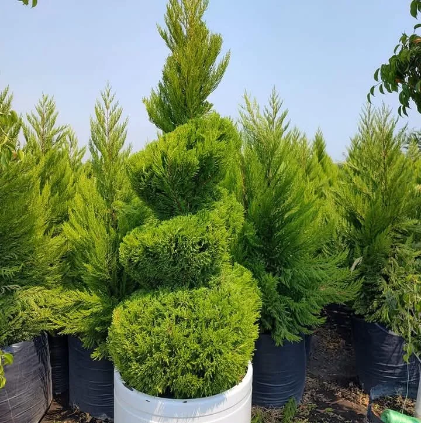
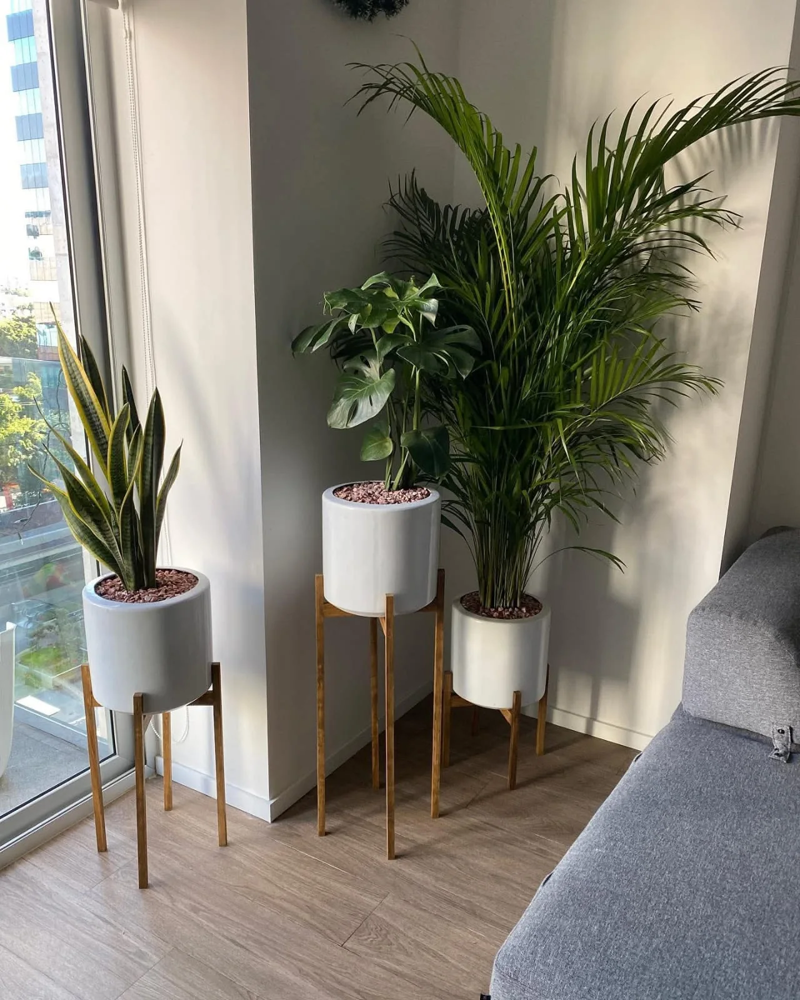

Diseño de jardines
Propuestas personalizadas que combinan distribución, vegetación, texturas y estilo arquitectónico.
Diseñamos, instalamos y cuidamos espacios verdes con soluciones estéticas, funcionales y adaptadas a cada proyecto.
Desde el primer boceto hasta el mantenimiento continuo, cuidamos cada detalle para que el jardín conserve su mejor versión.
Propuestas personalizadas que combinan distribución, vegetación, texturas y estilo arquitectónico.
Poda, limpieza, fertilización, control preventivo y cuidado periódico de áreas verdes.
Integración de plantas, fuentes, senderos, iluminación y elementos decorativos en armonía.
Instalación y renovación de jardines residenciales, corporativos, interiores y terrazas.
Diseño y construcción de cascadas, riachuelos ornamentales y elementos de agua integrados al jardín.
Una selección de jardines, fuentes, áreas verdes y trabajos de mantenimiento realizados por el equipo.
Seleccionamos plantas, árboles, macetas y elementos decorativos acordes al espacio, la iluminación y el mantenimiento disponible.
Consultar disponibilidad



En Jardines Creativos combinamos experiencia, planeación y sensibilidad estética para transformar espacios exteriores e interiores en ambientes vivos y funcionales.
Cuéntanos qué espacio quieres renovar y preparemos una propuesta.